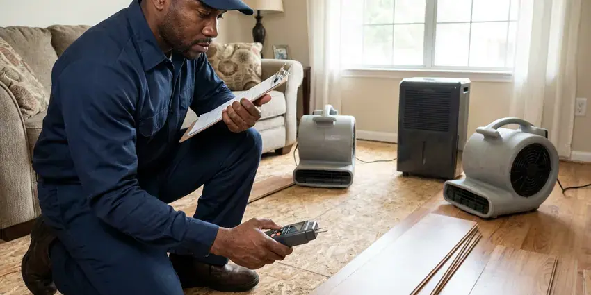

New Construction Plumbing in Jupiter, FL
Planning a new build in Jupiter, FL? HDF Plumbing is your dependable partner for all new construction plumbing needs.
- Dependable Installations
- Prompt Project Consultations
- Code Compliant Work
- Seasoned Plumbers

Your New Build Deserves the Best Plumbing in Jupiter, FL.
Contact HDF Plumbing today for a thorough consultation and estimate on your new build.
Reliable New Construction Plumbing for Homes and Additions in Jupiter, FL
HDF Plumbing installs complete plumbing systems for new homes, guest suites and additions, starting with the underground drain lines before the slab is poured or the floor is framed. We size water service, lay out manifolds and set stub-outs right where your cabinet and fixture plans call for them.
Our expertise includes:
- Under-slab drain, waste and vent systems with protected penetrations
- Gas piping, water heater venting and pressure-tested final connections
- Rough-in plumbing for all fixtures and equipment.

Additional Plumbing Maintenance Services in Jupiter, FL
Our maintenance and specialty plumbing services in Jupiter, FL catch small problems before they become emergencies.


Customers
Why Choose HDF Plumbing for New Construction Plumbing in Jupiter, FL?
Choosing the right plumbing contractor for new construction is vital for the long-term integrity of your home. Our team ensures every pipe and fitting is installed to the highest standards.
- Code Compliance, All our new construction plumbing work closely follows Florida and local Jupiter building codes, preventing inspection issues.
- Schedule Discipline, We book underground, top-out and trim dates up front and keep them.
- Plan-Accurate Layouts, We set every stub-out from your approved plans and cabinet drawings, not guesswork.
Citywide Coverage
We plumb new builds on infill lots in older Jupiter neighborhoods as well as tract and custom homes in the newest subdivisions. Our trucks carry enough pipe and fittings to finish a phase in one visit wherever your lot sits.
Experienced Team
Our team has worked with production builders and one-off custom homes, so we understand both speed and detail. Every lead plumber is trained in PEX-A expansion fittings, solvent welding and gas pipe sizing.
Safety-First Approach
We install to the plumbing and fuel gas codes adopted by your city or county and schedule each required inspection. Gas lines are pressure tested and tagged, and water heaters get proper venting, seismic straps where required and a properly piped T&P discharge line.
Trusted Certified Jupiter Plumbing Services Professionals
At HDF Plumbing, we take pride in providing licensed, certified plumbing services throughout Jupiter, FL. Backed by recognized industry credentials, our experienced plumbers combine technical skill with genuine customer care. Whether it is repair, installation, or maintenance, we follow strict safety and quality standards to deliver lasting results you can trust.
Call Us Now PHCC Plumbing Contractor Recognition
PHCC Plumbing Contractor Recognition Better Business Bureau (BBB) Accreditation
Better Business Bureau (BBB) Accreditation Angi Certified Pro
Angi Certified Pro ISO 9001 Quality Management Certification
ISO 9001 Quality Management CertificationDependable New Construction Plumbing Services in Jupiter, FL
Final Trim and Fixture Setting in Jupiter
At trim we install toilets, faucets, garbage disposals, dishwashers, ice maker boxes and laundry connections. We work with fixtures from Moen, Delta, Kohler, American Standard and the other brands builders often choose, or with owner-supplied fixtures. Every fixture is checked for flow, drainage and leaks, and angle stops are set straight and tight. We finish by running every fixture at once to verify the system drains and vents properly under load.

Residential New Build Plumbing in Jupiter
For new homes, our residential new construction plumbing includes the complete installation of water supply lines, drain waste vent systems, and gas lines. We confirm proper sizing and pressure for all fixtures, from showers to kitchen sinks, while accounting for local water quality and potential foundation movement. Around Jupiter, flushing the water heater yearly and descaling tankless units helps keep scale buildup under control. Our process includes careful planning to prevent future slab leaks or drainage issues tied to the soil under your lot.
New Construction Plumbing Cost Planning in Jupiter, FL
Plumbing for a typical new single-family home usually runs about 4 to 8 percent of total build cost, depending on fixture count and finish level. A modest three-bedroom home often lands between $12,000 and $25,000, while custom homes with multiple suites and outdoor kitchens run higher. Choices like a manifold PEX system, a recirculation loop and fixture grade affect the price the most. We break the bid out by phase so you can see clearly where the money goes.
Permits and Inspections for New Plumbing in Jupiter, FL
HDF Plumbing handles all necessary plumbing permits and coordinates with local Jupiter inspectors throughout the new construction process. We make sure every phase of the plumbing installation, from rough-in to final trim-out, passes inspection. Our knowledge of local regulations means your project stays compliant, avoiding delays and ensuring the long-term validity of your plumbing system.
Fixture Installation and Trim-Out in Jupiter, FL
Once the rough-in is complete and walls are up, our team returns for fixture installation and trim-out. This includes connecting sinks, toilets, bathtubs, showers, dishwashers, and water heaters. We ensure all fixtures are properly seated, sealed, and functional, providing a clean finish to your new construction plumbing. We work with many brands like Moen, Kohler, and American Standard to match your design specifications.
Rough-In Plumbing Services in Jupiter
The rough-in phase is where the core plumbing system is installed within the walls, floors, and ceilings before drywall. This includes all supply lines, drain lines, and vent piping for every fixture. Our plumbers meticulously plan and execute the rough-in, using high-quality fittings and ensuring all pipes are properly secured and leak-tested before inspection.
Preventing Common Florida Plumbing Issues in New Builds in Jupiter, FL
New construction in Florida must account for local conditions. Nearly all homes in Florida sit on concrete slabs over sandy soil, so leaks under the slab are a common and costly repair. We focus on installations that resist shifting foundations and soil movement, which can stress pipes. Around Jupiter, flushing the water heater yearly and descaling tankless units helps keep scale buildup under control. We recommend appropriate piping materials and treatment options to minimize scale buildup over time, so your new home's plumbing lasts for decades.

Sewer and Water Main Connections in Jupiter, FL
Connecting your new home to the municipal sewer and water mains is a key step in new construction plumbing. HDF Plumbing handles all aspects of these connections, including excavation, trenching, pipe laying, and backfilling. We ensure proper grading and sealing to prevent future leaks or blockages. Nearly all homes in Florida sit on concrete slabs over sandy soil, so leaks under the slab are a frequent and costly repair.
New Construction Plumbing Near Me in Jupiter, FL
Local matters on new builds because inspectors, utility layouts and soil conditions differ from one jurisdiction to the next. We already know what the inspectors around Jupiter look for at underground, top-out and final. That familiarity spares you reinspection fees and lost days.
We understand the local building landscape and specific requirements for new homes across Jupiter. Choosing HDF Plumbing means partnering with a company that knows the area and delivers quality new construction plumbing tailored to your needs.
HDF Plumbing at a Glance
- Licensed and insured plumbers serving Jupiter, FL
- Same-day appointments and 24/7 emergency response
- Clear written estimates, no hidden fees
- 4.9-star rated by 739+ Florida customers
Jupiter Map
Jupiter Information
- Population
- 61,291
- Area codes
- 561/772/954
- Service area
- Jupiter and communities within 40 miles
- Nearby
- Palm Beach Gardens, West Palm Beach, Wellington, Boynton Beach
Pipe choice, bedding and layout decisions made before the slab is poured or the floor is framed shape the life of the whole plumbing system in a new Jupiter, FL home. Around Jupiter, flushing the water heater yearly and descaling tankless units helps keep scale buildup under control.
Expert Services
Trust our professionals for reliable HDF Plumbing solutions in Jupiter, FL.
Our Specialized Plumbing Services in Jupiter, FL
At HDF Plumbing, we provide a complete range of plumbing services across Jupiter, FL. From leak detection to full system installations, our team ensures fast, precise, and affordable service for both residential and commercial properties. Explore our core services below:


Here Is How Our New Construction Plumbing Process Works in Jupiter, FL
Our new construction plumbing process is designed for clarity, efficiency, and adherence to the highest standards. We guide you through each step, ensuring your new home's plumbing is done right.
Request a Quote
Call (904) 925-7356 or send your plans and fixture schedule. We return an itemized bid that breaks out underground, rough-in, top-out and trim.
Phase Scheduling
We set dates for each plumbing phase around your concrete and framing schedule. You get a single point of contact who confirms each visit in advance.
Install, Test and Trim
Our crew installs each phase, pressure tests it and meets the inspector. At final trim we set fixtures, test every line and walk through the home with you.
Frequently Asked Questions About New Construction Plumbing in Jupiter
The cost of new construction plumbing in Jupiter varies a lot based on the size and complexity of the project, number of bathrooms, and fixture choices. For a standard 3-bedroom, 2-bathroom home, rough-in and finish plumbing can range from $10,000 to $25,000. Commercial projects or luxury homes with advanced systems run higher.
Several inspections are needed during new construction plumbing. These usually include an underground or rough-in inspection before walls are closed, a top-out inspection if applicable, and a final inspection after all fixtures are installed and the system is operational. We schedule and coordinate all inspections to ensure compliance.
The plumbing rough-in phase for a typical residential build in Jupiter usually takes 1 to 2 weeks, depending on the crew size and complexity. The final fixture installation and trim-out generally takes an additional 2 to 4 days later in the construction schedule.
Plumbing is often covered under the general building permit, but we handle the plumbing inspections and any separate plumbing or gas permits your jurisdiction requires. We hold the licenses Florida requires for plumbing work. Our team schedules each inspection and meets the inspector on site.
Slow drains on a brand new home, gurgling fixtures, sewer odors or a stub-out that ended up under a wall are common red flags. These usually trace back to poor slope, missing vents or layout errors before the pour. A camera inspection can pinpoint the cause before the problem grows.
Some jurisdictions allow owner-builders to do their own plumbing on a home they will live in, but the work still has to pass every inspection. Under-slab and gas work are the hardest to get right and the most expensive to fix later. Many owner-builders hire us for those phases and finish simpler tasks themselves.
We install a wide range of reputable plumbing fixture brands based on your preferences and budget, including Kohler, Moen, Delta, American Standard, and Toto. We can also handle specific requests if you have a particular brand or style in mind, ensuring quality and availability for your new home.
Yes, we can handle only the underground, only rough-in and top-out, or only trim. If another plumber started the job, we will inspect and test their work before taking it over. That protects you and keeps the inspection record clean.
What People Are Saying About Our Plumbing Experts?

Sofia M.
Two new toilets installed in one visit, no mess left behind, and the tech even adjusted a faucet he noticed was dripping. Fair pricing and really friendly.
Toilet Installation · West Palm Beach, FL
Emily R.
I called HDF Plumbing for plumbing repair, and the technician was fast, polite, and thorough. They explained the problem clearly and fixed it the same day. I will definitely hire them again. Highly recommended!
Plumbing Repair · Palm Beach Gardens, FLLaura S.
I scheduled a water heater replacement, and the team made the process smooth and affordable. The new unit works perfectly, and they cleaned up after completing the job.
Water Heater Replacement · Jupiter, FL
Mark T.
When our office needed drain cleaning, HDF Plumbing provided quick, reliable service. The plumber arrived on time and made sure every drain flowed perfectly before leaving. Very satisfied.
Drain Cleaning · Delray Beach, FL
Daniel K.
A pipe burst at 11 pm and they actually answered. The plumber showed up within the hour, shut everything down, and had us back to normal the next morning. Could not ask for more.
Emergency Plumbing · Jupiter, FL
Robert G.
The trenchless sewer replacement saved our front yard. They walked us through the camera inspection footage first so we knew exactly what we were paying for.
Sewer Line Replacement · Palm Beach Gardens, FL